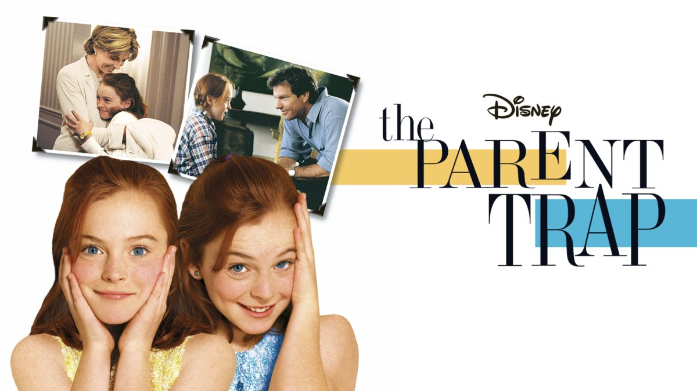

The Parent Trap is a 1998 American romantic comedy film directed and co-written by Nancy Meyers, and produced and co-written by Charles Shyer. It is a remake of the 1961 film of the same name and an adaptation of Erich Kästner's 1949 German novel Lisa and Lottie (Das doppelte Lot)
The Lost City is a 2022 American action-adventure comedy film directed by the Nee brothers, who co-wrote the screenplay with Oren Uziel and Dana Fox, from a story conceived by Seth Gordon.[6] It stars Sandra Bullock and Channing Tatum as a romance novelist and her cover model respectively who must escape a billionaire (Daniel Radcliffe) who wants her to find a lost ancient burial chamber described in one of her books. The film co-stars Da'Vine Joy Randolph and Brad Pitt.

Author: Seth Gordon